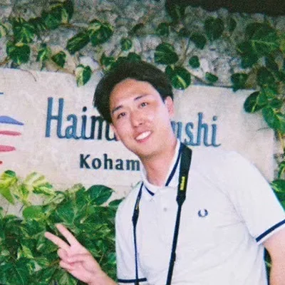
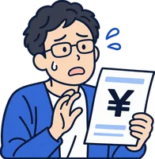

小さな
後回しに
ひとりで
相談の
お客さま：見積書づくりが毎回面倒で…
野上：そのお悩み、僕なら解決できます！
LINEまたは
直接やり取りします。

見積書も
ホームページの

会社に
頼んで
ひとつでも
見積書づくりや
LINEを
「ここだけ直したい」を、
お客さま：見積書づくりが毎回面倒で…
野上：いまの作り方、見せてもらえますか？
手直しの
※数字は
効果は
料金の
道具が
間に
大が
知り合いに
そんな
ご相談を
ビデオ通話で
分からない
はい。
お渡しから
細かな
いいえ。
お話を
平日は
土日祝日は、
お渡しの
手直しや
その
「この
整理は
はい。
一度きりの
できるだけ、
はい。
まず
はい。
LINEや
内容に
小さな
はじめまして、野上 翔太です。
2021年から
いまの
そのなかで、
毎日
会社に
仕事の
いろいろな
プロフィール写真は、
妻の
時間つぶしに
今は、
毎年
初めての
来世は
初めて
朝2時発、
あんなに
また
皆さんも
「こんな
友だち追加して